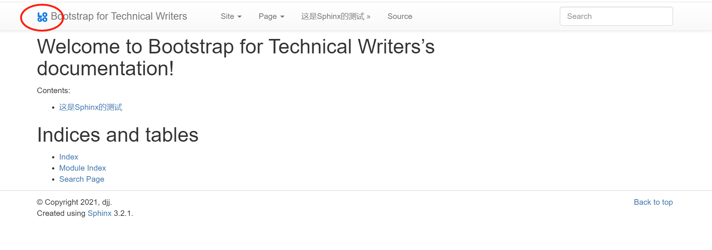
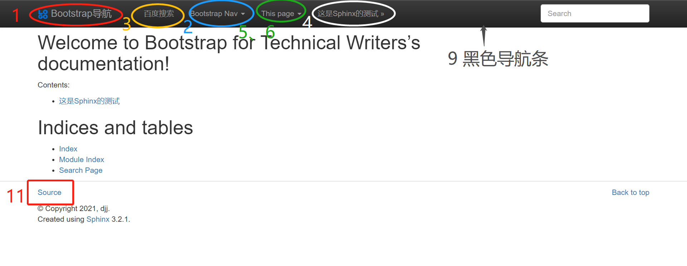

主题简单定制¶
简单定制主题即在conf.py中添加 html_theme_options等进行基于模板的简单自定义，如果想进行复杂的自定义请查看 复杂自定义文档
徽标Logo定制¶
将logo徽标保存在在相对于_static文件目录的路径中
并在conf.py文件末尾添加以下代码（此处logo.png对应图片名称）:
html_logo =“ logo.png”
显示效果如下图圈部分：

导航条更细节的定制¶
导航条外观的定制的具体定制可以通过在conf.py文件中加入 html_theme_options 进行自定义:
html_theme_options = {
# 1.设置想要的导航名称:这里设置为：Bootstrap主题测试
'navbar_title': "Bootstrap导航",
# 2.导航条中网站的名字
'navbar_site_name': "Bootstrap Nav",
# 3.可以在导航条中加入以下三种模式的链接形式:
# (name, page) # 网站中一页的连接
# (name, "/aa/bb", 1) # 相对连接
# (name, "http://example.com", True) # 绝对网页连接
#这里在导航条中加入百度搜索的按钮，点开会进入百度搜索主页
'navbar_links': [
("百度搜索", "https://www.baidu.com/", True),
],
# 4.将下一页标题在导航条中显示（默认值：True）
'navbar_sidebarrel': True,
# 5.在导航预览渲染当前页面的目录。（默认值：True）
'navbar_pagenav': True,
# 6.当前页面目录的标签名称。（默认值：“Page”）
# 此处设置为This Page
'navbar_pagenav_name': "This page",
# 7.导航栏选项卡的目录深度。（最小值：1）
#切换为-1可显示所有等级。（此处设置为所有等级）
'globaltoc_depth': -1,
# 8.在网站导航预设包含隐藏的目录
#注意：如果为“ false”，则不能混合使用``：hidden：''和同一页面中的非隐藏“ toctree”指令，否则进行编译会中断。
'globaltoc_includehidden': "true",
# 9.navbar类（最小值：“ navbar”）附加到<div>元素。
#对于黑色导航栏，请执行“ navbar navbar-inverse”，此处设置为黑色
'navbar_class': "navbar navbar-inverse",
# 10.将导航栏固定在页面顶部(默认为True）
'navbar_fixed_top': "true",
# 11.将Source链接放置的位置
# 默认放置在导航中，也可以选择放置在页脚等位置中(此处放置在页脚）
'source_link_position': "footer",
}
上述设置对应的效果如下图所示：
